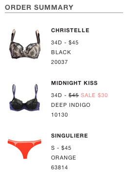
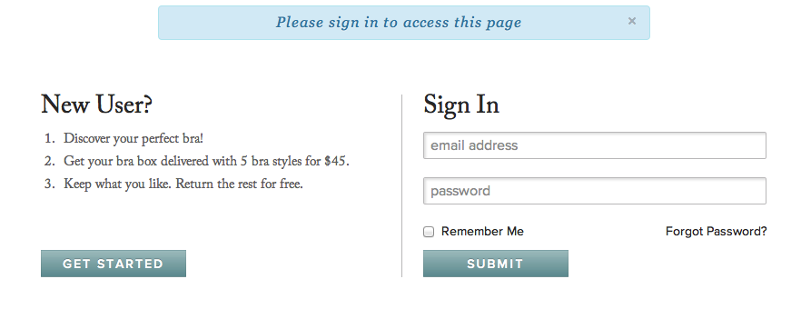
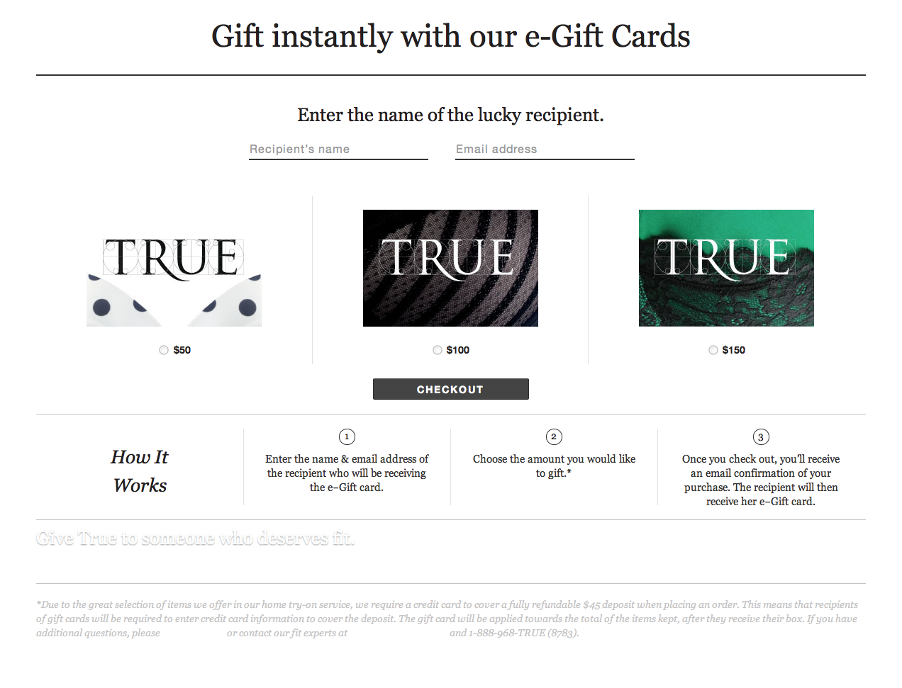

True Bootstrap CSS
Customizing Bootstrap
Why use Bootstrap?
- It’s a well documented standard.
- It has a base component for almost everything we need.
- Includes a responsive grid for smaller and larger devices
Downside of a CSS Library
- It comes with baggage.
- CSS becomes bloated when extending and customizing the base styles.
Best practices
- Maximize reuse of rules
- Maximize reuse of rules
- 3x maximize reuse of rules
How to make reusable rules...
- Make small modules
- Combine 2 to 4 classes on an element
<table class="table table-striped table-hover"> - Avoid nesting rules more than 3 levels deep
Style Guides
Page Markup

A page is a layout with components
If you are lucky all the pieces already exist.
Check the Style Guide

Name that module...
<div class="media order-media-module">
<div class="pull-left">
<img alt="Michelle-jan-19-3-280px" class="media-object" src="https://s3.amazonaws.com/trueandco_prod/product_images/pictures/360/thumb/Michelle-Jan-19-3-280px.jpg?1327105867">
</div>
<div class="media-body">
<div class="media-heading">Christelle</div>
<div>
34D
-
$45
</div>
<div>Black</div>
<div>20037</div>
</div>
</div>
<table class="table table-striped table-hover">
<thead>
<tr>
<th>Transaction Date</th>
<th>Order #</th>
<th>Tracking Link</th>
<th>Shipping Address</th>
<th>Payment</th>
<th>Status</th>
</tr>
</thead>
<tbody>
<tr data-order-id="168881">
<td>
March 5th, 2013
</td>
<td>
168881
</td>
<td>
</td>
<td>
<a href="/my/payment">3433 25th Street San Francisco CA 94110</a>
</td>
<td>
No credit card data available
</td>
<td>
<a href="/my/orders/168881" class="btn btn-mini" data-view-order="true">View Order</a>
</td>
</tr>
</tbody>
</table>
<div class="modal container hide fade in" id="variantDetailModal" aria-hidden="false">
<button aria-hidden="true" class="close" data-dismiss="modal" type="button">x</button>
<div class="modal-body product-detail-module">
<div class="row-fluid divided">
<div class="span3">
<div class="inner product-info">
<h1 class="h4">Midnight Kiss</h1>
<div class="brand">Blush</div>
</div>
</div>
</div>
<div class="span6 horz-ruled">
<div class="inner image-info" style="min-height: 485px; ">
<div class="image-main">
</div>
</div>
</div>
<div class="span3">
<div class="inner action-info">
<div class="btn-wrap">
<a href="/cart/edit/1141?quantity=1" class="btn btn-primary btn-block btn-small add" data-id="1141">Add to Cart</a>
</div>
</div>
</div>
</div>
<div class="row-fluid">
<div class="related-module span12">
<div class="related-items">
<label>Related Items:</label>
<ul>
<li class="related-item">
</li>
</ul>
</div>
</div>
</div>
</div>
<div class="tabbable tabs-left tabs-page row">
<ul class="nav nav-tabs span4">
<li class="active">
<a data-toggle="tab" href="#faq1">Home try-on program</a>
</li>
<li>
<a data-toggle="tab" href="#faq2">Bra Fitting, Sizes and Styles</a>
</li>
<li>
<a data-toggle="tab" href="#faq3">Order and Account information</a>
</li>
</ul>
<div class="tab-content faq-content span7">
<div class="tab-pane accordion active" id="faq1">
<div class="accordion-group">
<div class="accordion-body collapse" id="faq1answer2">
<div class="accordion-body collapse" id="faq1answer3">
</div>
</div>
</div>
</div>
</div>
Adding new CSS rules
// Core variables and mixins
@import "bootstrap/variables";
@import "bootstrap/mixins";
/*
* Signin Controller css Manifest
*/
@import "components/signin";
// Signin module
// -------------------------------------------------------------
.signin-module {
margin-left: auto;
margin-right: auto;
padding: $l-space 0;
max-width: 860px;
ol {
padding-right: 40px;
}
ol li {
padding-bottom: 5px;
}
.action {
margin-top: 10px;
width: 160px;
}
.action-bottom {
.push {
height: 25px;
}
.btn {
width: 160px;
position: absolute;
bottom: 0;
}
}
.divided {
position: relative;
}
}
// Responsive
// For Signin module
// -------------------------------------------------------------
/* Landscape phone to portrait tablet */
@media (max-width: 767px) {
.signin-module .action-bottom {
.push {
height: 0;
}
.btn {
margin-bottom: $l-space;
width: 160px;
position: relative;
bottom: auto;
}
}
}
The case for inline CSS
- content_for :css do
:css
.giftcard-module {
margin-top: 30px
}
.giftcard-module [class*="span"].active .inner,
.giftcard-module [class*="span"]:hover .inner {
background-color: #fadad2;
}
.giftcard-module .inner {
display: block;
margin: 0 20px 0;
padding: 0;
border: 1px solid transparent;
}
.giftcard-module .inner.is-focus {
outline: 1px dotted #333;
/* Webkit */
outline: 5px auto -webkit-focus-ring-color;
outline-offset: -2px;
}
.giftcard-module p.body {
margin-bottom: 0;
}
.giftcard-module img {
border: 1px solid #ccc;
}
.how-it-works-module {
margin-top: 40px;
}
.how-it-works-module .thumbnails.thumbnails-ruled .thumbnail .inner {
padding-left: 0;
padding-right: 0;
}
.hero-sidekick {
margin: 30px auto;
width: 866px;
height: 577px;
background-image: url(/assets/giftcard/hero.jpg);
}
.hero-sidekick .hero-heading {
position: absolute;
left: 40px;
bottom: auto;
top: 270px;
max-width: 470px;
}
Cases for inline CSS
- As non-reusable customization layer
- For low traffic page which wouldn't benifit greatly from caching CSS rules
- Fewer http request for an external css files
- Tightly coupled to markup for easy archiving
- No risk of breaking other page layouts
Down of inline CSS
- It isn't cached
- No SASS or SASS variables
- May lead to more css rules and inconsistencies